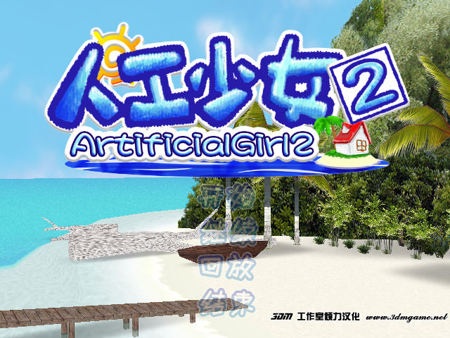
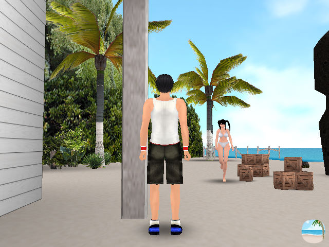

名稱：人工少女2 (Artificial Girl 2／Jinkou Gakuen 2，簡中版) 簡介：日本ILLUSION 2005年出品的18禁戀愛互動模擬遊戲 [待補]。

備註：本版為簡中漢化版（原版為日文版） 保護：不明 備註：VirtualBox無法正常執行，虛擬機請使用VMware。 操作： Z／滑鼠左鍵 = 走路 X+Z／滑鼠左鍵+右鍵 = 跑步 上下左右／Ctrl+移動滑鼠 = 調整視角 Ctrl+滑鼠左鍵+右鍵（或中鍵） = 縮放鏡頭 S = 重置鏡頭視角 A = 第一人稱／第三人稱／女孩 D = 呼喚／擁抱（3秒以上進入H模式，再按一次放開） F = 交換／牽手（可帶著女孩到處走，再按一次放開） Space = 坐下／與場景中物體互動（如上廁所、睡覺、換衣服等） C = 截圖 ESC = 遊戲選單